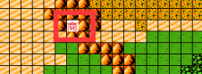
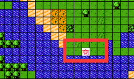
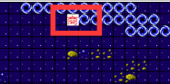

第一关：买三个根基给盖塔，能到4级差10经验升级，然后吃小兵到5级，一个人杀掉所有人没问题，夏亚是攻击贴身目标的所以把夏亚拉倒加血站用盖塔配合加血机只打反击就行。当然你可以卖更多的根基给盖塔，或是其他人。
第二关：小兵就靠卡缪和盖塔清理，保罗的话你不进去他的移动范围内是不会移动的，最后杀就可以，同样是5级盖塔，变形3号站在海里然后上面放加血机，加血机上面放卡姆陆形态站在海里，卡姆上面是保罗，这样一直排开，加血机情义，其他人的友情都用来给卡姆加血。当然了你可以买更多根基给盖塔或者卡姆。
第三关：是卡姆和盖塔先清理，等F91登场，F91直接加血基地扛着三黑星，卡姆变形去打灯泡，盖塔变形3号水里打海蟹，等到夏亚和拉拉行动的时候看你们想要拉拉，还是钱了，自己选着，这里之所以把拉拉属性和攻击放那么低，就是为了方便拿钱，不然和三黑星一样，又是空形态，很多想拿钱的玩家就难办了，这里说一下击杀拉拉（1000金币）的情况。直接让拉拉去F91哪里，西布克一个抗四个，夏亚就让卡姆带着在左上角山地和水里走来走去，这关就这么打完了。盖塔和卡姆5级，当然了你们想更快的过关或是培养其他人都随意。
第四关：这里给谁吃就看你们今后想走什么路线了：
1、培养盖塔：那就买地雷给盖塔到11级就能过关了，轻松点就在吃一个，变形盖塔3号到海里一战。
2、培养金Z：那就给甲儿吃到15级，这样不但第四关轻松过，第七关也是轻松过，第八关还不用爆机，当然11级就可以不爆机了。
3、培养大卫的刚达：那就给龙吃到11级过第四关。当然你可以给骡子到15级，可一样很难打，需要风筝，骡子加血基地上先请小兵，在打boss。
4、刚达Z和F91：同甲儿一样
怎么培养看你们个人喜好。
第五关：优先给麦塔斯吃地雷，下图是原版中的隐藏商店

麦塔斯到15级就能轻松过第五第六第七关了，能打能奶能输出，还能跑，这么强力为什么不升级，17级出爱心和传真。
第六关：优先给麦塔斯到17级，到了之后，还有地雷就给你要培养的人。如果觉得第六关和第七关难，就劝降卡尔，很强力能用到第八关。觉得还行，那就拿卡尔的500金币
第七关：15级甲儿或者15级加血机或者劝降卡尔，都能轻松过。
第八关：有古莲，其他人躺着
第九关和第十关：有刚达ZZ，其他人躺着。下图是隐藏商店，有属性道具卖

第十一关和十二关：有巴斯塔，其他人躺着。等到刚达R，盖塔龙，金出场之后，三大主力终于凶起来了。
第十三关：送分题
第十四关：下图位置是隐藏商店，指定母舰进入

里面有属性道具卖，这是最后一个卖属性道具的商店。
第十六关：全灭很难，本游戏最难的一个挑战。
第二十关：击落休
本游戏难度已经是偏低了，有难度的就是全灭16关和击落20关的休。